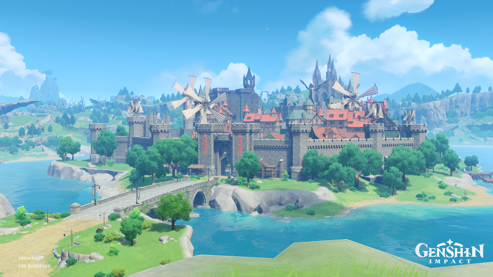
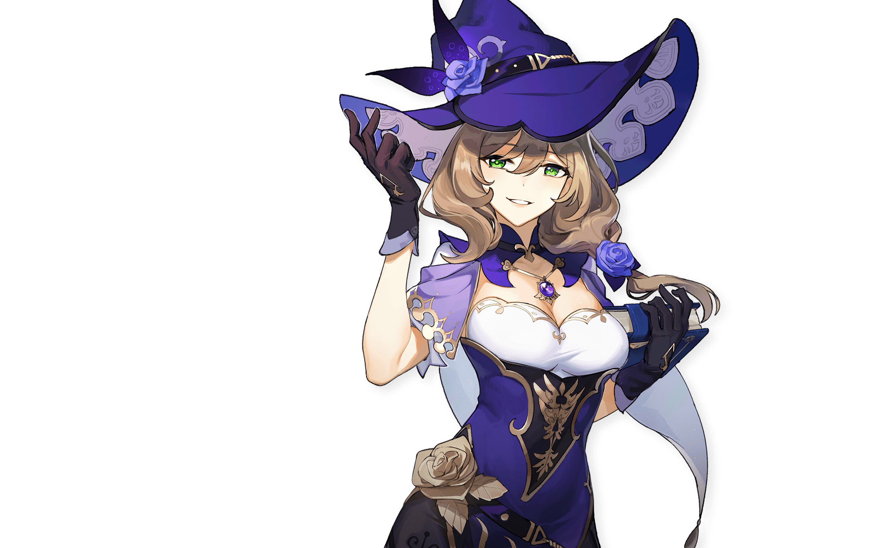

Characters

JEAN
As the Acting Grand Master of the Knights, Jean has always been devoted to
her duties and maintaining peace in Mondstadt.
She had taken
precautions long before the onset of Stormterror's assault, and she will
guard Mondstadt with her life as always.

AMBER
A perky, straightforward girl, who is also the only Outrider of the
Knights of Favonius.
Her amazing mastery of the glider has made her a three-time winner of the
Gliding Champion in Mondstadt.
As a rising star within the Knights of Favonius, Amber is always ready for
any challenging tasks.

LISA
She is an intellectual witch who can never get enough naps. As the
Librarian of the Knights of Favonius, Lisa is smart in that she always
knows exactly what to do with whatever troubles her.
As much as she loves her sleep, she still manages to keep everything under
control in a calm, composed manner.

KAEYA
In the Knights of Favonius,Kaeya is the most trusted aide for the Acting
Grand Master Jean. You can always count on him to solve any intractable
problems.
Everyone in Mondstadt loves Kaeya, but no one knows what secrets this
witty, charming knight has...

BARBARA
The Deaconess of the Church of Favonius and a shining idol adored by
all.
Although the concept of an idol is rather novel in a city of bards, the
people of Mondstadt love Barbara nonetheless.
"I owe everything to the city's spirit of freedom." — Barbara, regarding
her popularity.
See more characters